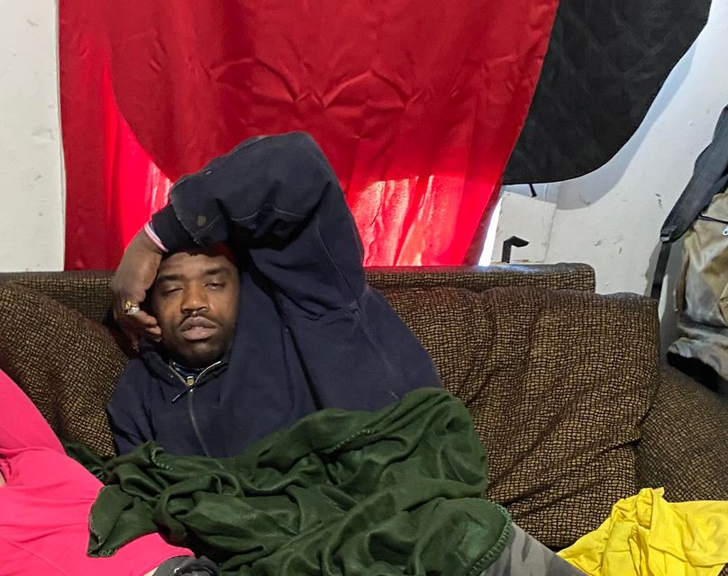

Mobile uploads
This is John.
He is a menace to the Middlebury community.
His biggest problem is that he’s insane… and smart.
He believes he has had infinite past, present and future lives. And because of that he owns everything.
So he kicks down doors, breaks windows, cuts fences, burns down tents (with women in them) and beats people up - all if he thinks you took something of his… which could be anything.
I’ve taken his girlfriend to the hospital because he beat her with a tire iron. He smashed her head so hard into my concrete wall that she couldn’t walk for half a day. He’s broken her bones.
If ever there should be an ideal candidate for New Day Court (it forces psychiatric medication on people who have not been committed of a crime but could “benefit from forced treatment”) it’s John. But my experience with people who have gone through this program is that they don’t deal with actual hard cases like John. They take people who will show up at court. Passive people.
I’ve dealt with guys like John before. My truck has been shot at (I bought the gun to get him to stop pointing and shooting it at people). I’ve been threatened with bats, axes, hammers and knives, and so has the entire homeless community.
John recently attacked a man who has been making biscuits and gravy for the homeless community. He was attacked because someone gave the man’s son a jacket who was also volunteering that day. John was enraged that the boy had his jacket.
So now the community no longer has the biscuits and gravy because, rightfully, he doesn’t feel secure continuing the work.
“Call the police,” I can hear you say. This is why you don’t call the police:
If the police can make an arrest, there is very little guarantee John is going to be in jail for more than a couple days. That’s how the system works. Plus, the jail is getting full again (because it’s winter and some people use it as a housing option) so there probably won’t be any room for him.
If and when he gets out of jail he’ll be furious. It’s then going to be 10 times worse for whoever called on him.
So we’re stuck with him.
This is America without places to take seriously mentally ill people. It’s the most insane part of the entire situation.